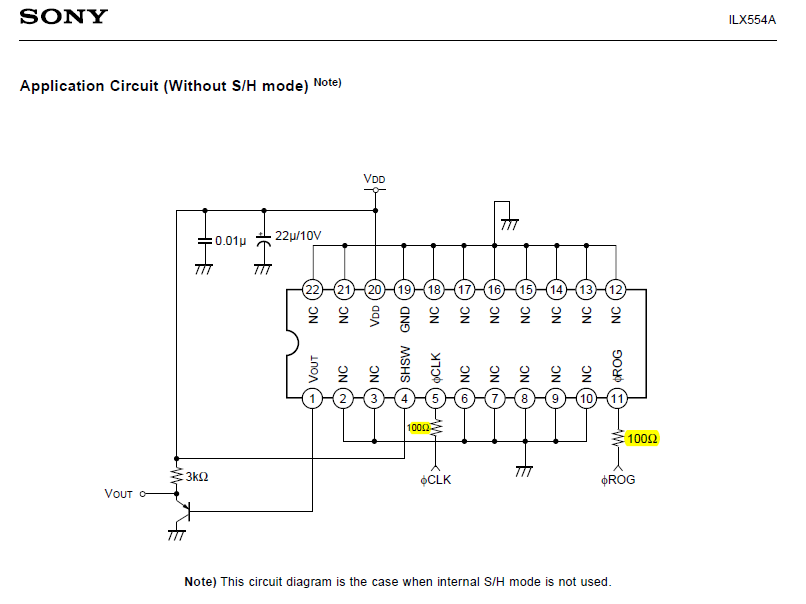
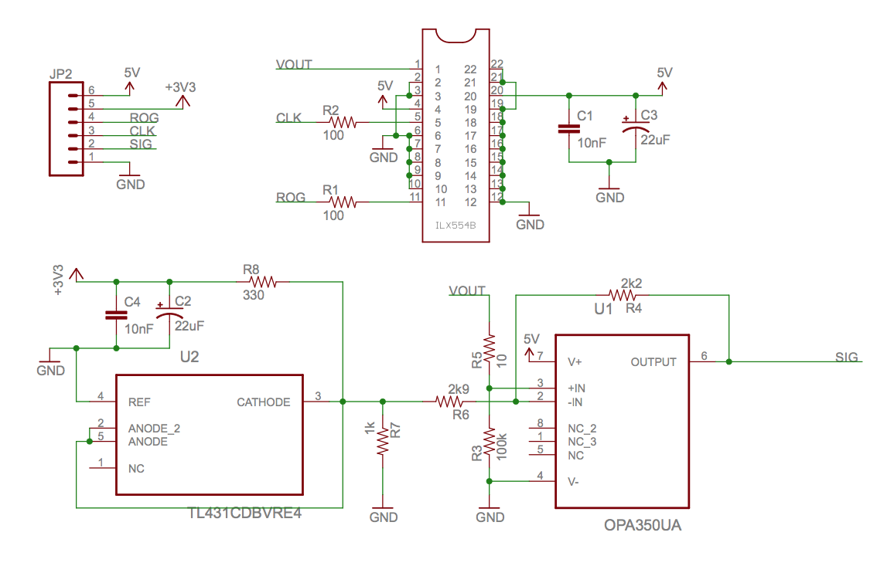
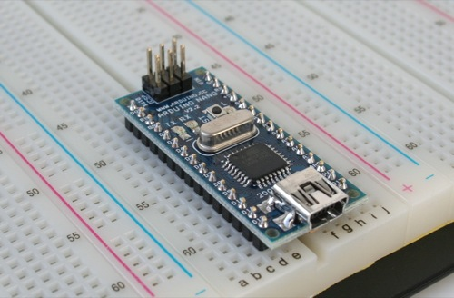
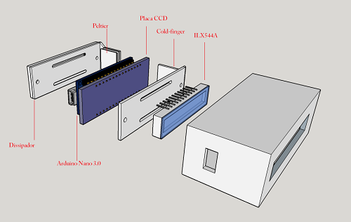
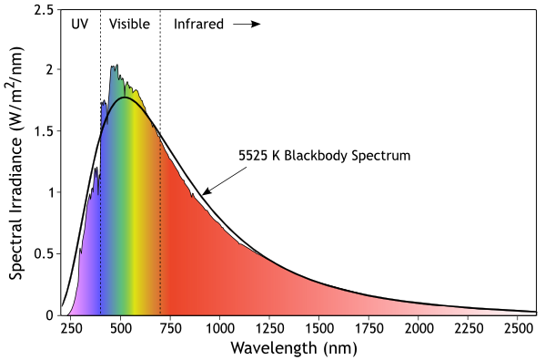
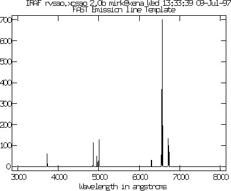
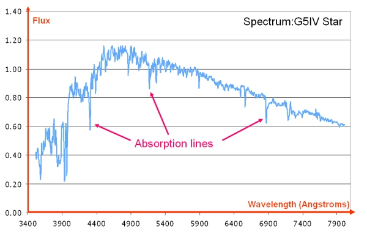
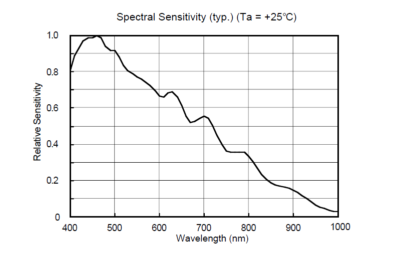

AltSpectra
autores: FC, JAC
Topo
Fases do desenvolvimento
- desenvolvimento do relógio para controlo do sensor linear Sony ILX544A
- desenvolvimento do circuito de deteção de temperatura
- desenvolvimento do circuito de controlo de TEC cooler
- desenvolvimento do circuito de controlo do sensor CCD
- obtenção do sinal com osciloscópio, para determinação do sinal de base, currente térmica, sinal propriamente dito, determinação da tensão de saturação.
- construção da placa de interface sensor/arduino
- integração Arduino nano + placa de aquisição.
- desenvolvimento do módulo óptico
- integração módulo electrónica com módulo óptico.
Lista de Materiais
placa Sensor V1
| qt. | descrição | Preço |
|---|---|---|
| 1 | Sony ILX 554A | |
| 22 | pinos Fêmea maquinados | |
| 9 | pinos Macho | |
| 1 | R1 - 150 Ohm | |
| 1 | R2 - 150 Ohm | |
| 1 | transistor PNP | |
| 1 | C1 - 10nF | |
| 1 | C2 - 22uF | |
| _________ | _________________________ | ________ |
| qt. | descrição | Preço |
|---|---|---|
| 1 | Arduino Nano | |
| _________ | _________________________ | ________ |
| qt. | descrição | Preço |
|---|---|---|
| 1 | Fonte de Alimentação 9V | |
| 1 | R3 - 100K Ohm | |
| 1 | P4 - 5K Ohm | |
| 1 | R5 - 10 Ohm | |
| 1 | R7 - 330 Ohm | |
| 1 | C3 - 22uF | |
| 1 | C4 - 10nF | |
| 1 | OPA350UA | |
| 1 | TL431CDBRE4 | |
| _________ | _________________________ | ________ |
| qt. | descrição | Preço |
|---|---|---|
| 1 | peltier | |
| _________ | _________________________ | ________ |
Módulo de controlo de temperatura do sensor e so peltier | 1 | lm61 - sensor CCD | | | 1 | lm61 - dissipador | | |_________|_________________________|________|
Esquema Topo
Placa do Sensor CCD Linear


Processing Unit
 
Exploded View of the Assembly
Software:
Hardware
Datasheets:
Livro de Registos
| sessão | Trabalho | Local/Data |
|---|---|---|
| 1 | sessão de esclarecimentos FC/JAC | Altlab 19/5/2015 |
| 2 | Sessão de Trabalho FC/JAC | Skypameeting 20/5/2015 |
| 3 | Sessão de Trabalho FC/JAC | AltLab 27/5/2015 |
| - | Sessões de Trabalho FC/JAC | OwnLabs Sprint 27/5/2015 |
| 4 | Sessão de Trabalho FC/JAC | SkypaMeeting 27/5/2015 |
Sensores
Sony:
lista de sensores da Sony
- Modelo ILX544A - sensor de 2048pixels, de 14 um.
- Modelos com melhores caracteristicas : {sensibilidade, e dimensão do Pixel} - ILX103A,ILX526A) http://www.poeticmonkey.com/ebay/semiconductors/optos/ilx751a/linear-ccd-guide.pdf
Toshiba
tdc2903D {origem scanner} tdc1304AP
Hamamatsu
- Sensor http://www.hamamatsu.com/us/en/S11155-2048-01.html
- Driver Board http://www.hamamatsu.com/us/en/product/category/3100/4005/4170/4198/C11165-01/index.html
Base Teórica
Compreender o funcionamento do sensor Linear de CCD ILX544A.
Um sensor linear CCD é composto por um array de fotodiodos sobre uma linha, com um conjunto de portas que são descarregadas, quando acionada a porta de libertação das portas, e posteriormente é estimulada por um relógio que aciona a descarga de cada photodiodo.
Um Sensor CCD tem como principio de funcionamento, um elemento sensivel à luz que converte os fotões recebidos em carga eléctrica, a quantidade de carga electrica é maior quanto maior for o tempo durante o qual o elemento de armazenamento estiver no estado de armazenamento.
O sensor linear tem dois modos de funcionamento: - S/H Store and Hold - O sensor é exposto e guardada a carga. - S/W Store and Wipe - O sensor é exposto e descarregada a carga desenvolvida.
Obter estes dois modos efectua-se da seguinte forma: - Store and Hold - o porto de SHSW é colocado ao 5V. - Store and Wipe - o porto de SHSW é colocado ao Ground
os dois portos importantes além da alimentação do mesmo, são os portos de libertação das portas ou ROG(Release of Gates), e do relógio CLK.
extrair dados de um sensor simples como o ILX544, passa pela compreensão do sistema de sinais lógicos que colocam o sensor no modo de aquisição ou no modo de envio dos sinais para um microcontrolador capaz de os tratar ou reenviar para a unidade de processamento.
O sensor necessita de ser actuado com um trem de ondas na porta ROG e CLK, para que se torne possível registar o valor de cada pixel. para isso é necessário perceber que o sensor uma vez limpo deve ser colocado a armazenar carga, que após a exposição deve ser lida com um conversor analógico digital. este processo ocorre se o trem de ondas for realizado como se observa na folha de dados do Sensor (Datasheet) ná página 4, no caso de estarmos a utilizar o Modo Store and Hold SH, no caso do modo Store and Wipe SW com o pino à massa o trem de sinais deve obedecer ao trem de ondas apresentado na página 5 da folha de dados do sensor.
existem mais parâmetros que são necessários compreender para conseguir retirar dados de um sensor destes, e obter resultados com rigor, e precisão necessários para que este tipo de sensores tenha aplicabilidade.
Pelo estudo da folha de dados do fabricante deste e de outros sensores e dispositivos é possivel obter o desempenho para que estes dispositivos sejam aplicados no melhor das suas capacidades.
é Necessário compreender que estes sensores possuem um nível de Ruido que é inerente ao seu funcionamento, que mantendo a temperatura estável e baixa será possível reduzir este ruído ao mínimo, para que este ponto se concretize temos de adicionar um sistema que consiga reduzir a temperatura do sensor, e mantê-lo estável, para termos uma ideia concreta dos ganhos que obtemos reduzindo a temperatura e mantendo estável, analisemos o segundo gráfico da página 8 da folha de dados do sensor que diz respeito à Dark Voltage Vs Ambient Temperature, e reparemos que a a 24 graus centigrados, temos uma razão de 1 , e que se a temperatura a que o sensor estiver a trabalhar for de 0 graus centigrados, a razão é de apenas 0,4. Estas razões dão-nos um a indicação da quantidade no entanto para termos uma percepção real do que significam temos de compreender que a Dark Voltage.
Obter a redução da temperatura a que um sensor destes pode trabalhar para cerca de 0 grau centigrado, só é passível de obter com sistemas de arrefecimento, nos dias de hoje existe sistemas de arrefecimento, que tiram partido de um sistema descoberto em 18XX por XXXX Sebeck, e que mais tarde e com o desenvolvimento da tecnologia dos materiais foi possivel de tornar mais simples de executar assim como mais eficiente, por J.C. Peltier. que passa pela utilização de um TEC ou Peltier este tipo de dispositivo funciona como uma bomba de calor, que extrai o calor de uma superficie enviando-o pela superficie oposta. usualmente estes dispositivos são colocados num dissipador que arrefecido a ar ou água extrairá o calor acumulado no dissipador aumentando a eficiencia do do sistema. é utilizado um meio condutor eficiente para extrair o calor do sensor, este processo colocará o sensor a uma temperatura inferior ao da atmosfera circundante.
No entanto, temos de compreender que na medida em que retiramos calor de um objecto aumentamos a tendência para que a água passe do estado gasoso-liquido-sólido porque a temperatuda de condensação foi atingida e posteriormente a temperatura de solidificação que no caso da àgua conhecemos como gelo. Este problema ao ocorrer invalida a utilização de um sensor como este pois essa condensação invalida a recolha de fotões de forma eficiente, logo, implica que um sensor destes ao ser arrefecido, se encontre numa atmosfera destituída do máximo de água, sendo o seu valor suficientemente baixo, para que não ocorra condensação. Do que foi exposto de depreende que o sensor necessite estar numa atmosfera controlada, estanque para que não ocorram trocas com a atmosfera, exterior do dispositvo e ainda que esta se encontre disecada (sem água).
Neste contexto a condensação não ocorre e o sensor funciona no máximo da sua eficiência.
Os sistemas de controlo dos TEC/Peltiers necessitam funcionam com um sistema de reposta em ciclo ou temperature feedback-loop que permitem regular a potência aplicada ao TEC/Peltier de modo a que este funione no máximo da sua eficiência possível.
Um factor a ter em linha de conta é que a inexistência de água no interior da atmosfera, dá um aumento da eficiência do sistema de arrefecimento pois este não necessita de estar a efectuar trabalho a retirar calor da água que se encontra na atmosfera da camara onde o sensor se encontra.

Compreender o Espectro da radiação
Para se ter uma correcta noção do que é um espectro é necessário em primeiro lugar compreender que a luz visível seja ela de que cor senos apresente, e um intervalo de comprimentos de onda que se nos apresentam com diferentes cores, esse intervalo pode ver-se num Espectro apresentado de forma gráfica desde os 400 nm aos 800 nm.

compreender as linhas de Emissão/absorção de um Espectro.
Os espectros são caracterizados pelas linhas de emissão e absorção.
Emissão:
- a emissão de radiação resulta do fenómeno em que a matéria irradiada, absorve a radiação, dando origem a um processo de excitação da nuvem electrónica, que posteriormente reemite fotões com um comprimento de onda proporcional à mudança de estado dos electrões envolvidos.

Absorpção:
- o processo de absorção parte do presuposto que a matéria é atravessada pela radiação, sendo a radiação absorvida em determinados comprimentos de onda, para isso é necessário conhecer a radiação que está a ser irradiada para a matéria, e posteriormente, determinar o diferencial absorvido.

Compreender o Funcionamento do Sensor CCD
Os sensores de CCD possuem várias caracteristicas importantes de ter em conta:
sensibilidade
ruído
sensibilidade
A sensibilidade de um sensor é a capacidade de este converter os fotões em electrões nos photodiodos que compõem a matriz de photodiodos do mesmo, sendo esta linear ou matrix x/y. deste fenómeno decorre o ganho que o sensor possui. a compreensão deste fenómeno permite compreender e corrigir o sinal obtido por forma a obter medições rigorosas com sensores ccd/cmos.
Ruido
O ruído no sinal resulta do ruído interno do sensor assim como do ruído do circuito, considerando que o ruído do sistema de aquisição é o somatório dos ruídos desde a camera de aquisição até ao computador.
Para se obter o Ruído do sensor é necessário efectuar uma exposição o mais curta possível com o sensor, não estando este exposto a radiação, os dados obtidos dizem respeito ao ruído. e são utilizados posteriormente para processar o sinal obtido.
Currente Negra
A denominação 'currente negra' decorre do fenómeno de acumulação de sinal nos pixels durante uma exposição, sendo proporcional ao tempo de exposição. altera o sinal recebido alterando a precisão dos resultados, no entanto pode ser quantificada por forma a ser subtraída ao sinal recebido.
Para se obter o sinal da dark current é necessário efectuar uma exposição com o sensor sem receber radiação com o tempo de exposição da imagem que iremos efectuar. Estes dados são utilizados posteriomente para processar o sinal obtido.
Processamento de Sinal
O processamento de sinal, são um conjunto de métodos com base matemática que permitem, melhorar a qualidade deste, e obter o resultado mais rigoroso.
Resposta Espectral
A resposta Espectral de um sensor é a sensibilidade para cada comprimento de onda dos pixels, influencia a capacidade de um sensor responder a fotões num intervalo de comprimentos de onda.
Para se obter a resposta espectral é necessário efectuar obter o sinnal de uma fonte conhecida e bem determinada por forma a obter a curva de resposta do sensor.
O resultado deste processamento, produz mais uma matriz de dados utilizada no processamento do signal por forma a obter-se um erro reduzido na nossa medição de sinal.
na Figura seguinte apresenta-se uma resposta espectral de um sensor.

Compreender a resolução de um espectrómetro (óptico)
A resolução de um espectrometro depende do sistema óptico associado, assim como da dimensão do pixel que faz a aquisição do sinal.
Como se processa o aquisição do Sinal de cada Pixel
{TODO}
Como se obtém o Espectro Normalizado
Tipos de redes de difracção
reflexão
difracção
descrição: Blazed Gratings
Exemplos
linhas de gases detectáveis por Espectrometria de absorpção

diagrama de absorpção de gases e estimulação no IV próximo

Subpáginas
Recursos
-Catálogo de espectroscopia molecular - JPL/NASA
-Plasma Recombination lasers in stellar atmospheres
-NIST - National Institute of Standards and technology - Atomic Spectra database
{kind=link}